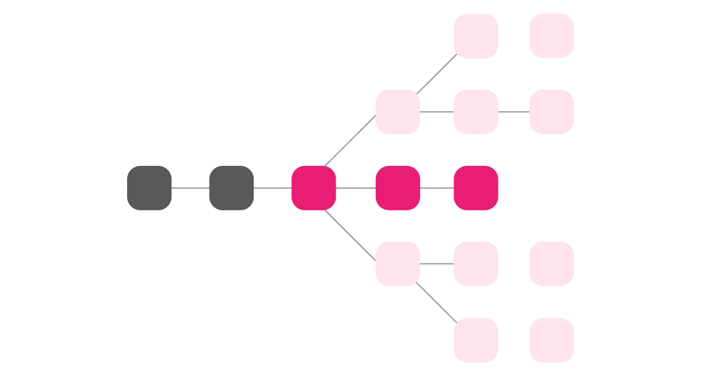
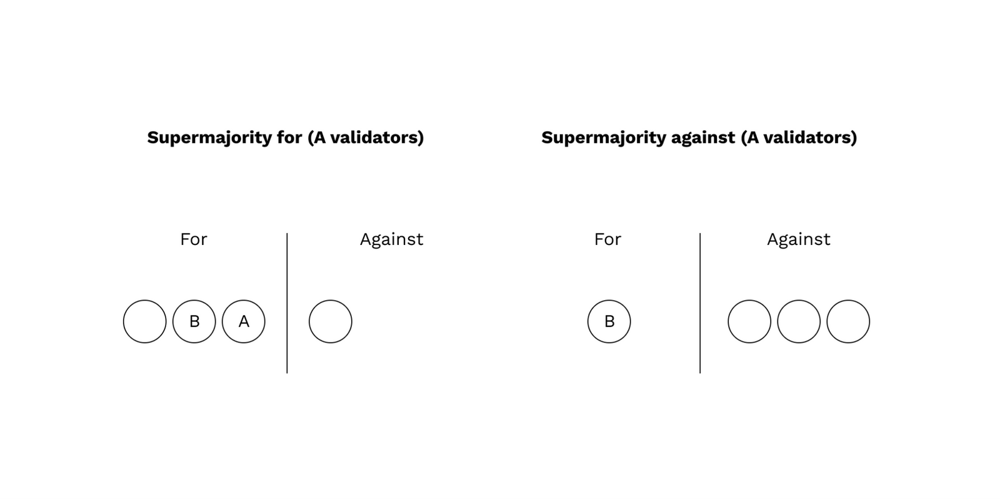
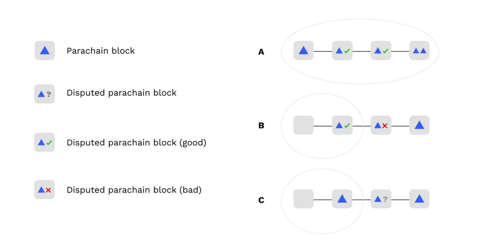

<!DOCTYPE html>
<html lang="en">

<head>
  <meta charset="utf-8" />
  <meta name="viewport" content="width=device-width, initial-scale=1.0, maximum-scale=1.0, user-scalable=no" />

  <title>Execution Sharding in Polkadot</title>
  <link rel="shortcut icon" href="./../../../assets/favicon.ico" />
  <link rel="stylesheet" href="./../../../dist/reset.css" />
  <link rel="stylesheet" href="./../../../dist/reveal.css" />
  <link rel="stylesheet" href="./../../../assets/styles/PBA-theme.css" id="theme" />
  <link rel="stylesheet" href="./../../../css/highlight/shades-of-purple.css" />

  <link rel="stylesheet" href="./../../.././assets/styles/custom-classes.css" />

</head>

<body class="site">
  <header class="site-header">
    <!-- This logo is a link only on the watching server, not the production build -->
      
  </header>
  <main class="reveal">
    <article class="slides">
      <section  data-markdown><script type="text/template">

# Execution Sharding in Polkadot
</script></section><section  data-markdown><script type="text/template">
## Execution Sharding

> Execution Sharding is the process of distributing blockchain execution responsibilities across a validator set.
</script></section><section  data-markdown><script type="text/template">
## Execution Sharding in Polkadot

> In Polkadot, all validators execute every relay chain block, but only a subset execute each parachain block.

This enables Polkadot to scale.
</script></section><section  data-markdown><script type="text/template">
## Lesson Agenda

<pba-flex center>

1. Discuss the high-level protocols and principles of Execution Sharding in Polkadot
1. Provide background on how complex on & offchain logic is implemented with Substrate

</pba-flex>

<aside class="notes"><p><a href="https://polkadot.network/blog/polkadot-v1-0-sharding-and-economic-security/">Polkadot v1.0: Sharding and Economic Security</a> is a comprehensive writeup of the content here in much more detail.
Please read it after the lesson if you would like to understand how Polkadot works from top to bottom.</p>
</aside></script></section><section  data-markdown><script type="text/template">
## Goals of Execution Sharding

<pba-flex center>

1. A minimal amount of validator nodes should check every parachain block while still maintaining security
1. The relay chain will provide ordering and finality for parachain blocks
1. Only valid parachain blocks will become finalized

</pba-flex>

<aside class="notes"><p>Because GRANDPA finality faults require 33% or more stake to be slashed, Goal (3) implies Shared Security</p>
</aside></script></section><section  data-markdown><script type="text/template">
## Interaction Between Client & Runtime

Since Polkadot involves not only on-chain logic but off-chain logic, the runtime is the central source of truth about validators, assignments, parachain states, etc.

Clients learn about the state by invoking **Runtime APIs** at recent blocks, and the runtime is updated with **new blocks**.


<aside class="notes"><p>Because the runtime is updated by new blocks, malicious or poorly connected validators have some choice in which information to provide the runtime with.
This must be accounted for in the protocol: we cannot assume that the runtime is always perfectly informed.</p>
</aside></script></section><section  data-markdown><script type="text/template">
## Parachains Protocols

<pba-flex center>

1. Collation
1. Backing
1. Availability
1. Approval Checking
1. Disputes

</pba-flex>
</script></section><section  data-markdown><script type="text/template">
## Motivation & Game Theory

Polkadot's approach is to have few validators check every parablock in the best case.

First, **backers** introduce new blocks and provide "skin in the game".

Then, randomly assigned **approval checkers** check their work, with an option to raise a dispute that involves all validators.

Rather than having every validator check every block, we just ensure that _detection_ of bad blocks is overwhelmingly likely and punishments are severe.
</script></section><section  data-markdown><script type="text/template">
#### Validator Group Assignments and Execution Cores


<aside class="notes"><p>Every Session (4 hours), validators are <em>partitioned</em> into small <strong>groups</strong> which work together.<br/>
Groups are assigned to specific <strong>Execution Core</strong>s, and these assignments change every few blocks.</p>
</aside></script></section><section  data-markdown><script type="text/template">
## The relay chain is Forkful

Validators and collators run these protocols on every block of the relay chain.

Often they run an instance of the protocol for every parachain block in every block of the relay chain.



<aside class="notes"><p>In the slides, we will look at single instances of the protocols, but it should be known that the validators are actually doing these steps in parallel with each other and often many times at a time.</p>
</aside></script></section><section  data-markdown><script type="text/template">
## Definition: Candidate

> A **Candidate** is a parachain block<br/>which has not yet been finalized in the relay chain.
</script></section><section  data-markdown><script type="text/template">
## Collation

In the Collation phase, a collator for a scheduled parachain builds a parachain block and produces a candidate.

The collator sends this to validator group assigned to the parachain over the p2p network.
</script></section><section  data-markdown><script type="text/template">
## Backing

In the backing phase, the validators of the assigned group share the candidates they've received, validate them, and sign statements attesting to their validity.

They distribute their candidates and statements via the P2P layer, and then the next relay chain block author bundles candidates and statements into the relay chain block.
</script></section><section  data-markdown><script type="text/template">
## Backing: Networking


</script></section><section  data-markdown><script type="text/template">
## Backing: Skin in the Game

The main goal of backing is to provide "skin in the game".

Backers are agreeing that if the parablock turns out to be bad, they will lose 100% of their stake.

Backing on its own does not provide security, only accountability.

<aside class="notes"><p>The current minimum validator bond as of Jan 27, 2022 is ~1.5 Million DOT.</p>
</aside></script></section><section  data-markdown><script type="text/template">
## Availability

At this point, the backers are responsible for making the data needed to check the parablock available to the entire network.

Validators sign statements about which data they have and post them to the relay chain.
</script></section><section  data-markdown><script type="text/template">


<aside class="notes"><p>In practice, we allow more than a single block for availability to be timed out.</p>
</aside></script></section><section  data-markdown><script type="text/template">
## Parablock Inclusion and Finality


</script></section><section  data-markdown><script type="text/template">
## Parablock Inclusion and Finality

> (3) Only valid parachain blocks will become finalized

<aside class="notes"><p>Remember our goal from earlier?</p>
</aside></script></section><section  data-markdown><script type="text/template">
## Parablock Inclusion and Finality

To fulfill this goal we need 2 things.

<pba-flex center>

1. A protocol for proving validity of included candidates
1. Consensus rules for the relay chain<br/>to avoid building on or finalizing<br/>relay chain forks containing bad candidates.

</pba-flex>
</script></section><section  data-markdown><script type="text/template">
## What is "Checking" a Parablock?

Checking involves three operations:

<pba-flex center>

1. Recovering the data from the network
1. Executing the parablock, checking success
1. Check that outputs match the ones posted<br/>to the relay chain by backers

</pba-flex>

<aside class="notes"><p>Step 3 is of crucial importance.
Without it, backers could create things like messages and runtime upgrades out of thin air, by backing a valid candidate but lying about the outputs of the candidate.</p>
</aside></script></section><section  data-markdown><script type="text/template">
## Security Model: Gambler's Ruin

The security argument for Polkadot is based on Gambler’s Ruin.

An attacker who can take billions of attempts to brute-force the process would eventually be successful.

But because of slashing, every failed attempt means enormous amounts of DOT slashed.
</script></section><section  data-markdown><script type="text/template">
## Approval Checking

Every validator node is running an approval checking process for every parachain block in every relay chain block.
This process has a few properties:

<pba-flex center>

1. The process on any particular node either outputs "good" or stalls.
1. The output of the process on a node is based on the statements it has seen from other validators or produced itself.
1. If the parachain block is valid (i.e. passes checks) then it will eventually output "good" on honest nodes.
1. If the parachain block is invalid then it will only output "good" on honest nodes with low probability

</pba-flex>

<aside class="notes"><p>Honest nodes output &quot;good&quot; only if there is a very large amount of malicious checkers and they mainly see votes
from those checkers as opposed to honest checkers.</p>
<p>Low probability here means 1 in 1 billion or so (assuming 3f &lt; n)
Not cryptographic low probability, but good enough for crypto-economics.</p>
</aside></script></section><section  data-markdown><script type="text/template">
## Approval Checking

Approval checking involves validators generating assignments to check parablocks.

Every validator is assigned to check every parablock, but at different times.

For later-assigned validators, if it's approved by the time it's their turn, they simply do not check.
</script></section><section  data-markdown><script type="text/template">
## Approval Checking: Assignments and Approvals

Validator assignments are known only to the validator until revealed.

Validators reveal their assignment before downloading data and checking the parablock.

This ensures that others will notice if they disappear, leading to escalating requirements for checkers.

<aside class="notes"><p>If validators began downloading data before revealing their assignment, an attacker might notice this and attack them without anybody noticing.</p>
</aside></script></section><section  data-markdown><script type="text/template">
## Approval Checking: The Hydra


<aside class="notes"><p>Approval Checking is like the hydra.
Every time an attacker chops off one head, two more heads appear.</p>
</aside></script></section><section  data-markdown><script type="text/template">
## Disputes

When validators disagree about the validity of a parablock, a dispute is automatically raised.

Disputes involve all validators, which must then check the block and cast a vote.

Backing and Approval statements already submitted are counted as dispute votes.

Votes are transmitted by p2p and also collected on-chain.
</script></section><section  data-markdown><script type="text/template">
## Dispute Resolution



<aside class="notes"><p>resolution requires a supermajority in either direction.</p>
</aside></script></section><section  data-markdown><script type="text/template">
## Dispute Slashing

The validators on the losing side of the dispute are slashed.

The penalty is large when the candidate is deemed invalid by the supermajority and small when it is deemed valid.
</script></section><section  data-markdown><script type="text/template">
## GRANDPA Voting Rules

Instead of voting for the longest chain, validators vote for the longest chain where all unfinalized candidates are a) approved and b) undisputed


</script></section><section  data-markdown><script type="text/template">
## BABE Chain Selection Rule

Validators refuse to author relay chain blocks on top of forks containing parablocks which are invalid or have lost disputes.
This causes a "reorganization" whenever a dispute resolves against a candidate.


</script></section><section  data-markdown><script type="text/template">
<!-- .slide: data-background-color="#4A2439" -->

> How are complex off-chain systems<br/>implemented using Substrate?
</script></section><section  data-markdown><script type="text/template">
## Orchestra

[Orchestra](https://github.com/paritytech/orchestra) allows us to declare "Subsystems" which run asynchronously.

These subsystems communicate with message passing and all receive signals which coordinate their activities.
</script></section><section  data-markdown><script type="text/template">
## Orchestra: Signals

Signals are sent to all subsystems and act as a "heartbeat".

Messages sent after a signal arrives on one subsystem cannot arrive at another subsystem until it has received the same signal.
</script></section><section  data-markdown><script type="text/template">
## Orchestra: Signals in Polkadot

```rust
/// Signals sent by the overseer (Polkadot's Orchestra name) to all subsystems.
pub enum OverseerSignal {
	/// Subsystems should adjust their jobs to start
	/// and stop work on appropriate block hashes.
	ActiveLeaves(ActiveLeavesUpdate),
	/// `Subsystem` is informed of a finalized block
	/// by its block hash and number.
	BlockFinalized(Hash, BlockNumber),
	/// Conclude the work of the `Overseer` and all `Subsystem`s.
	Conclude,
}
```

<aside class="notes"><p>The instantiation of Orchestra in Polkadot is called &quot;Overseer&quot;.</p>
</aside></script></section><section  data-markdown><script type="text/template">
## Without Orchestra:

```rust
fn on_new_block(hash: Hash) {
  let work_result = do_some_work(hash);
  inform_other_subsystem(work_result);
}
```

Problem: There is a race condition!

The other subsystem may receive `work_result` before learning about the new block.
</script></section><section  data-markdown><script type="text/template">
## Examples of Subsystems in Polkadot

<pba-flex center>

- Dispute Participation
- Candidate Backing
- Availability Distribution
- Approval Checking
- Collator Protocol
- everything!

</pba-flex>
</script></section><section  data-markdown><script type="text/template">
## Implementers' Guide

[The Implementers' Guide](https://paritytech.github.io/polkadot/book) contains information about all subsystems, architectural motivations, and protocols used within Polkadot's runtime and node implementation.
</script></section><section  data-markdown><script type="text/template">
<!-- .slide: data-background-color="#4A2439" -->

# Questions
</script></section>
    </article>
  </main>

  <script src="./../../../dist/reveal.js"></script>

  <script src="./../../../plugin/markdown/markdown.js"></script>
  <script src="./../../../plugin/highlight/highlight.js"></script>
  <script src="./../../../plugin/zoom/zoom.js"></script>
  <script src="./../../../plugin/notes/notes.js"></script>
  <script src="./../../../plugin/math/math.js"></script>
  <script>
    function extend() {
      var target = {};
      for (var i = 0; i < arguments.length; i++) {
        var source = arguments[i];
        for (var key in source) {
          if (source.hasOwnProperty(key)) {
            target[key] = source[key];
          }
        }
      }
      return target;
    }

    // default options to init reveal.js
    var defaultOptions = {
      controls: true,
      progress: true,
      history: true,
      center: true,
      transition: 'default', // none/fade/slide/convex/concave/zoom
      slideNumber: true,
      plugins: [
        RevealMarkdown,
        RevealHighlight,
        RevealZoom,
        RevealNotes,
        RevealMath
      ]
    };

    // options from URL query string
    var queryOptions = Reveal().getQueryHash() || {};

    var options = extend(defaultOptions, {"width":1400,"height":900,"margin":0,"minScale":0.2,"maxScale":2,"transition":"none","controls":true,"progress":true,"center":true,"slideNumber":true,"backgroundTransition":"fade"}, queryOptions);
  </script>


  <script>
    Reveal.initialize(options);
  </script>
</body>

</html>
